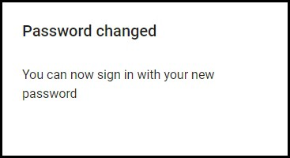

Pour changer le mot de passe,
vous allez entrer votre Email dans le formulaire ci-dessous,
vous recevrez un email de "noreply@..."

Le mail sera en anglais, mais cliquez juste sur le lien (long texte souligné de couleur bleu).
Vous serrez redirigés vers une autre page pour créer un nouveau mot de passe.
Créez un nouveau mot de passe et enregistrez-le.

Facile à mettre en œuvre, non?
Pour lancer le procésus de récupération de votre mot de passe,
Entrez votre Email et cliquez sur valider.